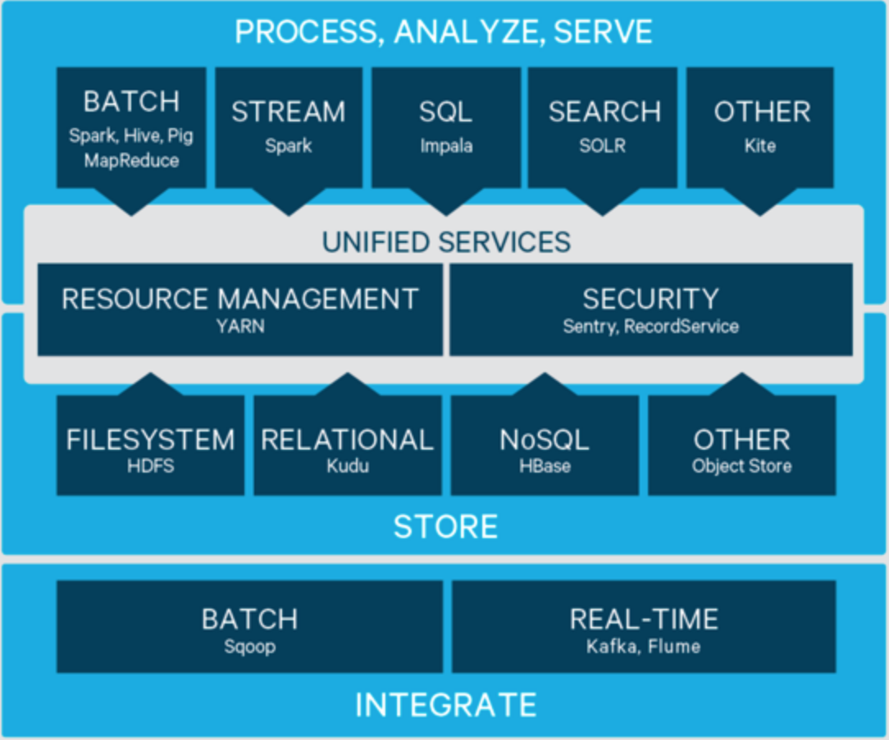
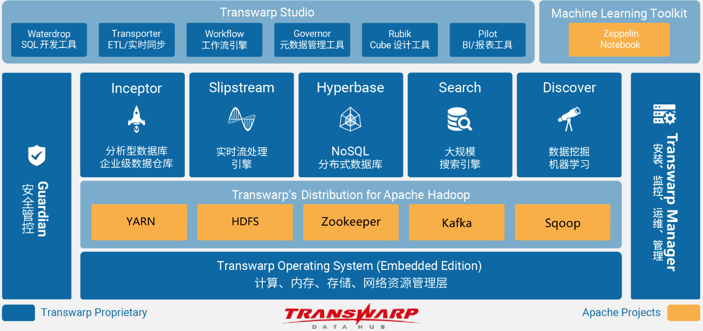
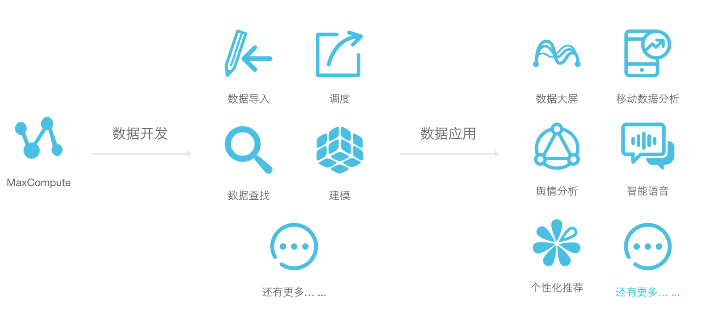

- 00 开篇词 为什么说每个软件工程师都应该懂大数据技术？.md.html
- 01 大数据技术发展史：大数据的前世今生.md.html
- 02 大数据应用发展史：从搜索引擎到人工智能.md.html
- 03 大数据应用领域：数据驱动一切.md.html
- 04 移动计算比移动数据更划算.md.html
- 05 从RAID看垂直伸缩到水平伸缩的演化.md.html
- 06 新技术层出不穷，HDFS依然是存储的王者.md.html
- 07 为什么说MapReduce既是编程模型又是计算框架？.md.html
- 08 MapReduce如何让数据完成一次旅行？.md.html
- 09 为什么我们管Yarn叫作资源调度框架？.md.html
- 10 模块答疑：我们能从Hadoop学到什么？.md.html
- 11 Hive是如何让MapReduce实现SQL操作的？.md.html
- 12 我们并没有觉得MapReduce速度慢，直到Spark出现.md.html
- 13 同样的本质，为何Spark可以更高效？.md.html
- 14 BigTable的开源实现：HBase.md.html
- 15 流式计算的代表：Storm、Flink、Spark Streaming.md.html
- 16 ZooKeeper是如何保证数据一致性的？.md.html
- 17 模块答疑：这么多技术，到底都能用在什么场景里？.md.html
- 18 如何自己开发一个大数据SQL引擎？.md.html
- 19 Spark的性能优化案例分析（上）.md.html
- 20 Spark的性能优化案例分析（下）.md.html
- 21 从阿里内部产品看海量数据处理系统的设计（上）：Doris的立项.md.html
- 22 从阿里内部产品看海量数据处理系统的设计（下）：架构与创新.md.html
- 23 大数据基准测试可以带来什么好处？.md.html
- 24 从大数据性能测试工具Dew看如何快速开发大数据系统.md.html
- 25 模块答疑：我能从大厂的大数据开发实践中学到什么？.md.html
- 26 互联网产品 + 大数据产品 = 大数据平台.md.html
- 27 大数据从哪里来？.md.html
- 28 知名大厂如何搭建大数据平台？.md.html
- 29 盘点可供中小企业参考的商业大数据平台.md.html
- 30 当大数据遇上物联网.md.html
- 31 模块答疑：为什么大数据平台至关重要？.md.html
- 32 互联网运营数据指标与可视化监控.md.html
- 33 一个电商网站订单下降的数据分析案例.md.html
- 34 A_B测试与灰度发布必知必会.md.html
- 35 如何利用大数据成为“增长黑客”？.md.html
- 36 模块答疑：为什么说数据驱动运营？.md.html
- 37 如何对数据进行分类和预测？.md.html
- 38 如何发掘数据之间的关系？.md.html
- 39 如何预测用户的喜好？.md.html
- 40 机器学习的数学原理是什么？.md.html
- 41 从感知机到神经网络算法.md.html
- 42 模块答疑：软件工程师如何进入人工智能领域？.md.html
- 所有的不确定都是机会——智慧写给你的新年寄语.md.html
- 第2季回归丨大数据之后，让我们回归后端.md.html
- 结束语 未来的你，有无限可能.md.html
- 捐赠
29 盘点可供中小企业参考的商业大数据平台
专栏前面我讲了，稍具规模的互联网企业都会搭建自己的大数据平台。但是有同学会问，对于更多的中小企业和初创公司而言，自己搭建大数据平台的成本是不是有点高。确实，拿一个开源的软件搭建自己的大数据平台，对于中小企业来说，无论是人才储备还是服务器成本，似乎都有点难以承受。所幸，还有商业大数据平台可供选择。
今天我就来和你盘点一下可供中小企业参考的商业大数据平台。
大数据解决方案提供商
Hadoop作为一个开源产品，关注的是大数据技术实现和产品功能。但是要把Hadoop这样的技术产品在企业真正应用起来，还有很多事情要做：企业目前的技术体系如何与Hadoop集成起来，具体的解决方案如何实现？如何去做Hadoop的部署、优化、维护，遇到技术问题该怎么办？企业需要的功能Hadoop不支持怎么办？
Cloudera是最早开展商业大数据服务的公司，面向企业提供商业解决方案，也就是支持企业解决我上面所说的问题。Cloudera提供技术咨询服务，为企业向大数据转型提供技术支持。同时Cloudera也开发了自己的商业产品，最主要的就是CDH。

CDH是一个大数据集成平台，将主流大数据产品都集成到这个平台中，企业可以使用CDH一站式部署整个大数据技术栈。从架构分层角度，CDH可以分为4层：系统集成，大数据存储，统一服务，过程、分析与计算。
1.系统集成：数据库导入导出用Sqoop，日志导入导出用Flume，其他实时数据导入导出用Kafka。
2.大数据存储：文件系统用HDFS，结构化数据用Kudu，NoSQL存储用HBase，其他还有对象存储。
3.统一服务：资源管理用Yarn，安全管理用Sentry和RecordService细粒度地管理不同用户数据的访问权限。
4.过程、分析与计算：批处理计算用MapReduce、Spark、Hive、Pig，流计算用Spark Streaming，快速SQL分析用Impala，搜索服务用Solr。
值得一提的是，Cloudera也是Apache Hadoop的主要代码贡献者。而开源产品也需要大的商业开发者的支持，如果仅仅就是零零散散的个人开发者，这样的开源产品的发展将很快失控。而商业公司也需要参与开源产品的开发，保证开源产品的发展路径和自己的商业目标保持一致。
除了Cloudera，还有一家比较大的大数据商业服务公司叫HortonWorks。近期（2018年10月），Cloudera和HortonWorks宣布合并，这样全球范围内大数据商业服务的格局基本已定。这或许意味着大数据技术领域的创新将进入微创新阶段。
国内本土和Cloudera对标的公司是星环科技，商业模式和Cloudera一样，主要是为政府和传统企业向大数据转型过程中提供技术支持服务。核心产品是类似CDH的TDH，如下图所示。

面向企业提供解决方案是早期IT服务厂商的主要商业模式，通过产品、服务、技术支持等方式向企业收费。IBM、微软、Oracle都是基于这样的商业模式赚得盆满钵满。早期的Cloudera也是基于这样的商业模式，并很快崛起。但是技术时代的变革来的实在是太快了，幸福的日子很快就过去了。
大数据云计算服务商
Oracle、微软这样的传统IT企业主要服务对象是企业和政府，营收和利润自然也主要来自企业和政府。所以当互联网开始崛起的时候，虽然以Google为代表的互联网公司很快就在技术领域取代了微软们的领先地位，但是大家的商业模式不同，井水不犯河水，倒也相安无事。
后来，Google、亚马逊这样的互联网公司发展出云计算这样的商业模式，企业无需购买、部署自己的服务器，只需要按需购买云服务，就可以使用各种各样的计算资源，比如虚拟主机、缓存、数据库等。相比以往自建数据中心，企业可以以更低的成本、更简单的方式、更灵活的手段使用云计算。随着云计算的快速发展，阿里巴巴等互联网企业也快速跟进，侵蚀以往IT巨头的企业领域市场，让Oracle这样的IT大厂感受到前所未有的压力。
现在所有应用程序都部署在云上，数据也产生在云端，这样自然而然的，大数据也在云上处理即可，主流的云计算厂商都提供了大数据云计算服务。
云计算厂商将大数据平台的各项基本功能以云计算服务的方式向用户提供，例如数据导入导出、数据存储与计算、数据流计算、数据展示等，都有相应的云计算服务。我以阿里云为例，一起来看看云计算厂商的主要大数据服务。
1.数据集成：提供大数据同步服务，通过提供reader和writer插件，可以将不同数据源（文本、数据库、网络端口）的数据导入、导出。
2.E-MapReduce：集成了Hadoop、Spark、Hive等主要大数据产品，用户可以直接将自己的MapReduce、Spark程序或者Hive QL提交到E-MapReduce上执行。
3.分析性数据库AnalyticDB：提供快速低延迟的数据分析服务，类似Cloudera的Impala。
4.实时计算：基于Flink构建的流计算系统。
我们看阿里云提供的这些服务，从技术栈角度看，几乎和Cloudera的CDH一样，这是因为人们的需求就是这样，只是提供的方式不同。Cloudera通过CDH和相关的技术支持，支持企业部署自己的大数据集群和系统。而阿里云则将这些大数据产品都部署好了，使用者只要调用相关API就可以使用这些大数据服务。
阿里云将这些大数据基础服务和其他大数据应用服务整合起来，构成一个大数据产品家族，这就是阿里云的数加。数加功能体系如下。

大数据SaaS服务商
大数据存储和计算固然有难度和挑战，也因此有了不少解决方案提供商。但是大数据的采集、分析、展现也有一定的门槛和难度，能不能帮企业把这一部分也实现了呢？这样企业无需关注任何技术细节，甚至不需要做任何技术开发，就可以拥有大数据采集、处理、分析、展示一套完整的大数据平台。
如果说云计算厂商把大数据服务当作基础设施（基础设施即服务，IaaS）和平台（平台即服务，PaaS）提供给企业使用，那么还有一些企业，直接把大数据服务当作软件提供给企业（软件即服务，SaaS）。
对于像友盟、神策、百度统计这样的大数据SaaS服务商来说，你只需要在系统中调用它提供的数据采集SDK，甚至不需要调用，只要将它提供的SDK打包到自己的程序包中，就可以自动采集各种数据，传输到他们的大数据平台。
然后你登录到他们的大数据平台上，各种数据统计分析报告已经自动生成，甚至和行业同类产品的对比数据也已经生成。此时你只需要查看、分析这些数据就可以了，几乎不需要做任何开发。
当然这类大数据SaaS厂商提供的服务比较简单，如果需要精细化、定制化地进一步采集数据、分析数据，还是需要自己调用接口进行开发。
但是，即使是不做进一步的开发，对于很多初创互联网产品而言，百度统计这类大数据服务提供的数据分析也是极有价值的。
大数据开放平台
除了上面提到的这几类商业大数据平台，还有一类大数据商业服务，就是大数据开放平台。
这类平台并不为用户提供典型的数据处理服务，它自身就有大量的数据。比如各类政府和公共事业机构、各类金融和商业机构，它们自己存储着大量的公共数据，比如中国气象局有海量的历史天气数据、中国人民银行有大量的客户征信数据、阿里巴巴有海量的电子商务数据。
如果这些数据是公共所有的，那么使用者就可以直接提交计算请求到这些大数据开放平台上进行计算。如果这些数据涉及保密和隐私，那么如果在不涉及用户隐私的情况下，也可以计算出有意义的结果，比如使用阿里巴巴的数据可以统计出区域经济繁荣指标和排名。
还有一种风控大数据开放平台，结合用户数据和自身数据进行大数据计算。金融借贷机构将借款人信息输入风控大数据平台，大数据平台根据自己的风控模型和历史数据进行风险分析，给出风险指数。金融借贷机构根据这个风险指数决定用户贷款额度和利率等，而风控大数据平台又多获得了一个用户数据，可以进一步完善风控模型和数据库。
小结
大数据已经进入成熟期，大数据技术和应用的各种垂直领域也被逐渐细分，并有越来越多的商业公司进入，继大数据技术生态之后，大数据商业生态也逐渐成型。
对于企业而言，大数据只是实现自己商业目标的工具，如果能借助商业大数据平台，更快实现自己的商业价值，事实上是更划算的事。作为技术人员，能利用自己的大数据知识，做好商业大数据方案的选型，将商业解决方案更好地应用到自己所在的企业，对自己和公司都是非常有价值的。
思考题
你了解的商业大数据平台和解决方案还有哪些？这些平台和方案的技术特点和商业价值是什么？
欢迎你点击“请朋友读”，把今天的文章分享给好友。也欢迎你写下自己的思考或疑问，与我和其他同学一起讨论。
© 2019 - 2023 Liangliang Lee. Powered by gin and hexo-theme-book.